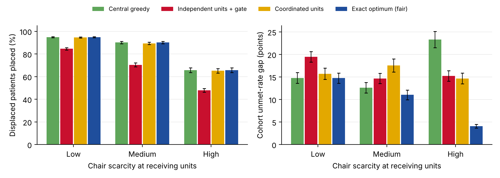

Experiment · Multi-agent coordination · Healthcare operations
When a dialysis unit closes, separate decisions lose patients and simple planners lose fairness
DialysisFlow: when one dialysis unit loses shifts, how much does it matter whether the other units decide together, separately or by a simple rule?
By Muzammal Hussain · 18 November 2026 · Research update
Haemodialysis patients need treatment three times a week, in fixed Monday–Wednesday–Friday or Tuesday–Thursday–Saturday slots, and most units run close to full. When a unit loses shifts, through a water-plant fault, flooding or a staff gap, its patients have to be found chairs elsewhere within days. This is often agreed unit by unit. I built a simulator to ask what that costs compared with a coordinated plan and with the best possible plan, and who is left out when the plan is made by a simple rule. It is an operational model only: chairs, shifts, travel and transport, with no patient data and no clinical decisions.
Key findings
- Units deciding separately lost patients. In one round of separate offers, 70.4% of displaced patients were placed, against 83.6% at the optimum, and nearly half of the plans booked more transport seats than existed.
- More rounds or fixed quotas did not fix it either. Letting units re-offer lapsed chairs placed 85%, but most of those plans overbooked transport; giving each unit a fixed share of seats kept plans workable but placed only 67%.
- A safety check did not fix it. Checking bookings against the shared fleet before confirming them made every plan workable but placed even fewer patients (67.6%).
- Coordination recovered almost everything. Rounds of offers against one shared record of chairs and seats placed 83.0%, within half a point of the optimum.
- Simple rules placed enough patients but not fairly. Greedy planners matched the optimum on numbers but left a 15–17 point gap between patients who need transport and those who do not. A plan that protected the worse-off group first cut that to 10 points, and to 4 when chairs were scarcest, at no cost in patients placed.
Setup
Each of 1,200 scenarios is a network of four to six receiving units, each with 8 to 16 chairs in four shifts. Between 60% and 95% of chairs are already in use, at three levels of scarcity. The closed unit loses two or all four of its shifts, displacing 16 to 62 patients. About a third need transport: they can travel at most 45 minutes and need a seat in a fleet shared by the whole network. The others can travel up to 75 minutes. Everyone keeps their weekday pattern; a move between morning and afternoon adds 20 minutes to a patient's burden.
Nine ways of deciding were run on every scenario: two central planners that place patients one by one; four ways in which receiving units make their own offers (one round, one round with a check before confirming, one round with a fixed share of transport seats each, and repeated rounds with no shared record of transport); units that coordinate in rounds through a shared record; and two exact optimisation models, one that places as many patients as possible and one that first protects the group with the lower placement rate. No method had errors added on purpose. Intervals are 95% bootstrap intervals over scenarios.

Results
| Method | Placed | Unmet, needs transport | Unmet, independent | Group gap (points) | Extra travel per patient (min) | Workable plans |
|---|---|---|---|---|---|---|
| Central planner, list order | 83.3% | 25.5% | 12.1% | 15.5 | 30.9 | 100% |
| Central planner, hardest first | 83.6% | 17.5% | 16.0% | 16.9 | 30.5 | 100% |
| Units deciding separately | 70.4% | 30.6% | 29.1% | 11.8 | 22.8 | 52.2% |
| Separately, with a check | 67.6% | 38.7% | 29.1% | 16.4 | 22.9 | 100% |
| Separately, fixed transport quotas | 66.6% | 51.2% | 24.1% | 28.7 | 23.3 | 100% |
| Separately, repeated rounds | 85.4% | 17.5% | 13.0% | 8.1 | 26.0 | 36.4% |
| Units coordinating in rounds | 83.0% | 26.0% | 12.2% | 16.0 | 26.1 | 100% |
| Optimum, most placed | 83.6% | 23.9% | 12.5% | 13.8 | 25.0 | 100% |
| Optimum, fairness first | 83.6% | 21.7% | 13.6% | 10.0 | 25.0 | 100% |
The one-round separate units' smaller group gap is not a good result: both groups were badly served, with about 30% of each left without a place. Repeated rounds look best on paper only because nearly two thirds of their plans booked transport seats that did not exist. The group gap is worked out in each scenario and then averaged.
What went wrong, and where
When units decided separately, two things happened. Patients offered places by several units took one, and the other offers lapsed, leaving chairs empty. And each unit booked transport as if the fleet were its own, so 48% of plans overbooked it, by about two seats each time. The loss grew with scarcity, from 5 points below the optimum when chairs were plentiful to 17 points when they were scarce.
Repeating the rounds solved the first problem but not the second: lapsed chairs were filled, but 64% of plans still overbooked transport. Fixed quotas solved the second by leaving seats idle at one unit while another needed them, so half of the patients who need transport went without a place. Only a shared record of seats fixed both.
The central planners had the opposite weakness. They placed nearly as many patients as possible, but who missed out depended on the order rule. Placing the hardest-to-place patients first sounds fair, yet under high scarcity it left 41% of independent patients without a place against 22% of transport patients. When chairs were plentiful, every method left a gap of about 15 points, because the binding limit was transport seats, not chairs.
How much transport matters
I also varied the share of patients who need transport and the size of the fleet. With half the fleet, every workable method, including both optimisation models, left 40 to 51 points between the two groups: no allocation can close a gap created by missing seats. With one and a half times the fleet, the fairness-first plan kept the gap to 2 to 6 points. Fleet size mattered far more than how many patients needed transport.
What this means
On this model, separate decisions mainly cost patients, and a final check prevents bad bookings without recovering them. A shared record of scarce resources such as transport, used in rounds or by a central planner, recovers almost all of the loss; more rounds or fixed quotas without it do not. And the fairness of a plan is a choice: unless the plan states whose unmet need it is minimising, a reasonable-looking rule can shift the burden onto one group. Here, protecting the worse-off group cost nothing in patients placed.
Limitations
The networks are synthetic. Chair numbers, occupancy, travel limits, the share needing transport and fleet size are illustrative, not taken from any service. Travel is straight-line distance turned into minutes. The two groups are an operational construct and the group gap is not a validated fairness measure. Clinical priority, infection control, staffing rules and patient preference are not modelled, and the unit agents follow rules rather than using language models.
Background: Liu and Mostafavi (2023), An equitable patient reallocation optimization and temporary facility placement model for maximizing critical care system resilience in disasters, Healthcare Analytics 4, 100268; Smith, Zucker and Frasso (2020), Natural disasters in the Americas, dialysis patients, and implications for emergency planning: a systematic review, Preventing Chronic Disease 17, E42; Farhadi, Ansari and Jara-Moroni (2023), Optimization models for patient and technician scheduling in hemodialysis centers, Health Care Management Science 26(3), 558–582; Reihaneh, Ansari and Farhadi (2023), Patient appointment scheduling at hemodialysis centers: an exact branch and price approach, European Journal of Operational Research 309(1), 35–52; Bertsimas, Farias and Trichakis (2011), The price of fairness, Operations Research 59(1), 17–31.